MY FAMILY -`♡´
 |
|||
| AYAH | 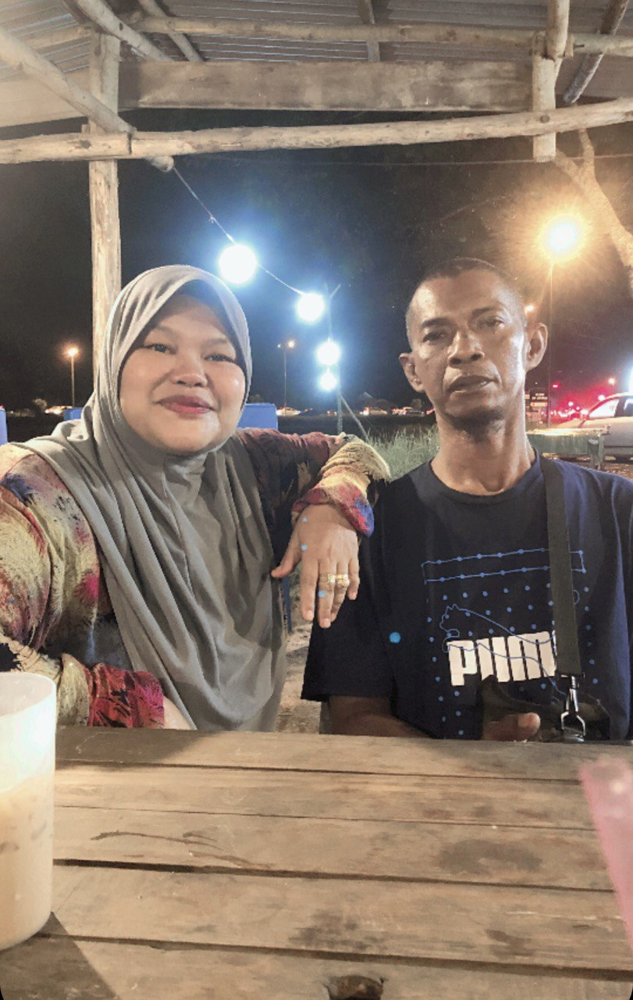 | IBU | 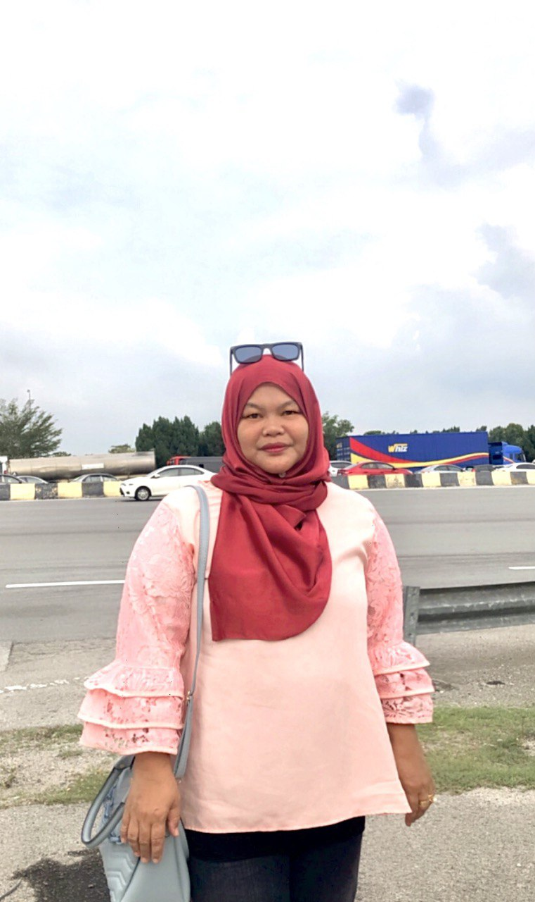 |
| ABANG | 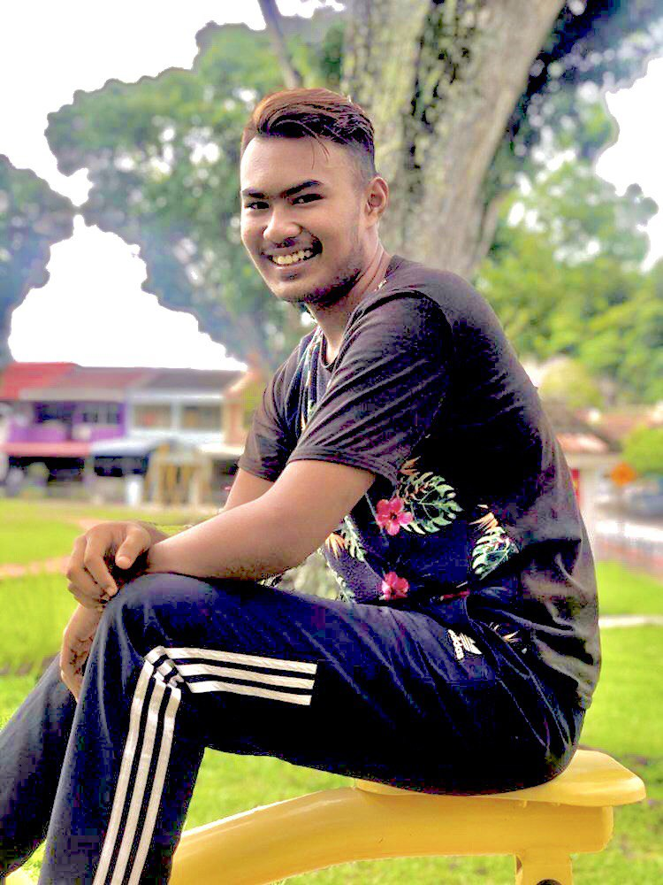 | SAYA | 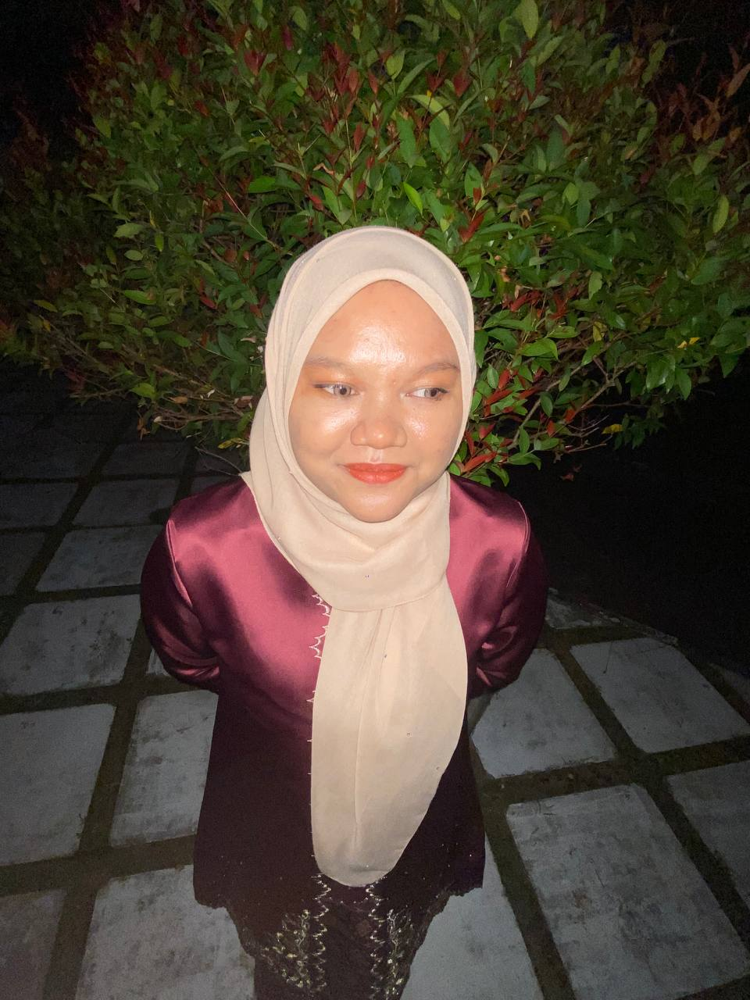 |
| ALANG | 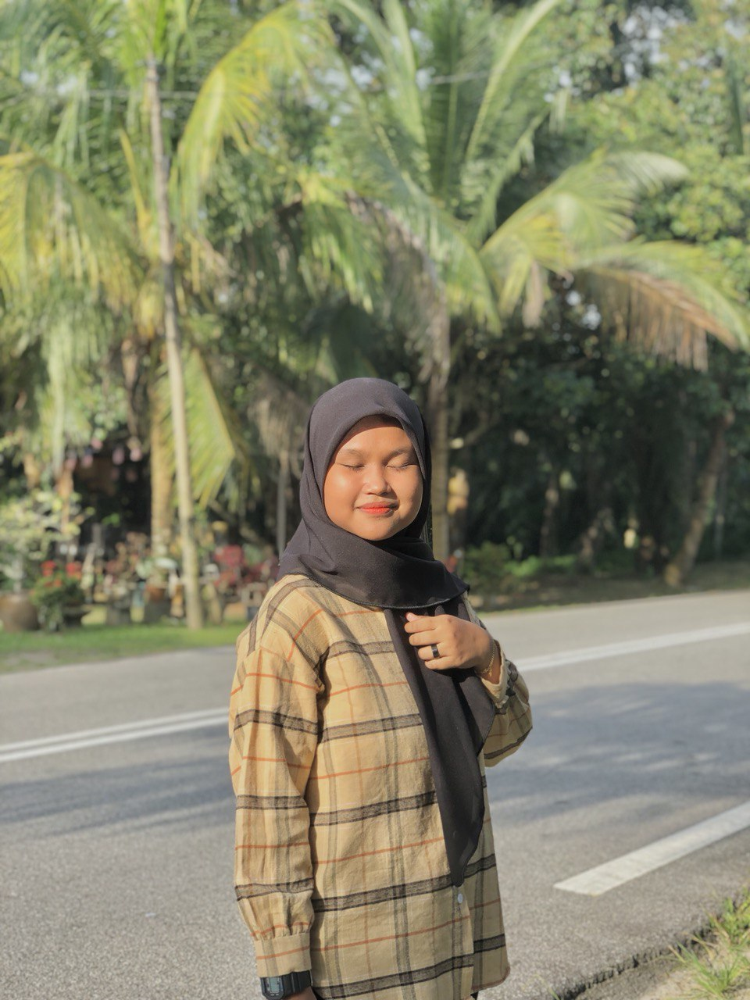 | ADIK | 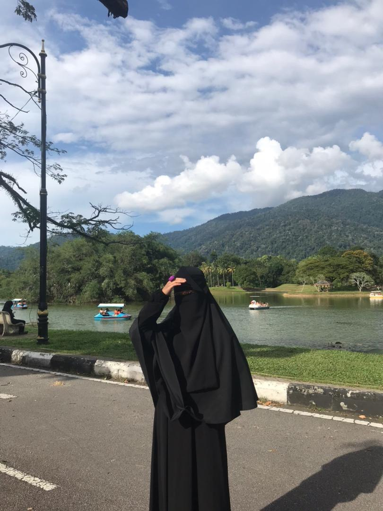 |
1 / 3
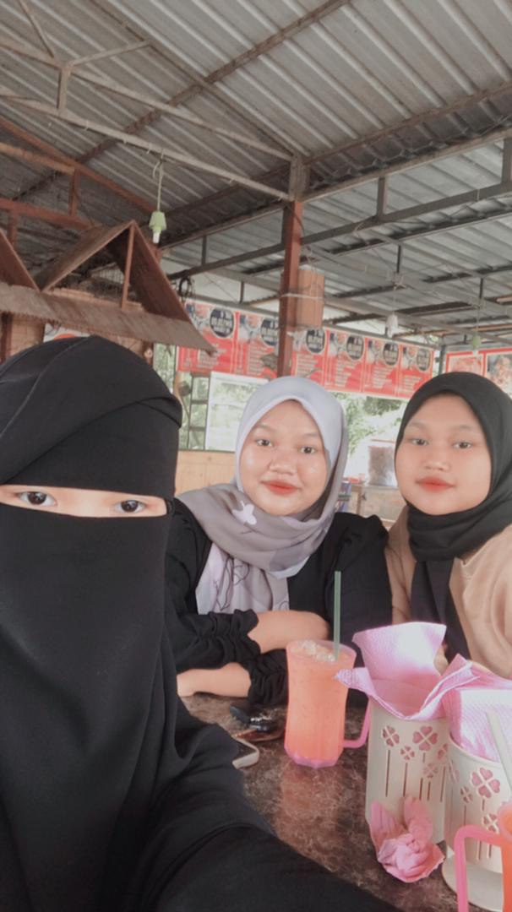
siblings
2 / 3
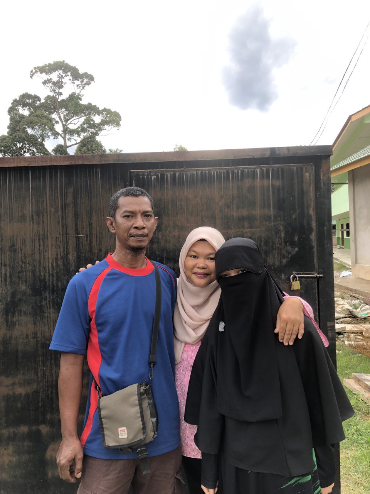
love
3 / 3
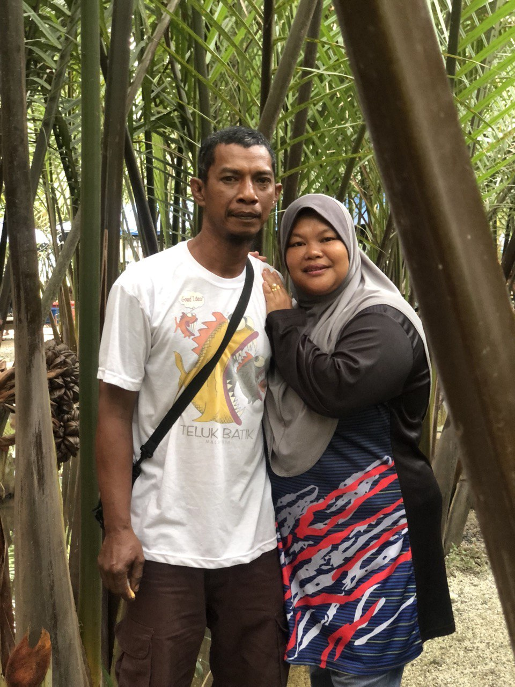
syurga
3 / 3

with abang
3 / 3

with adik
3 / 3
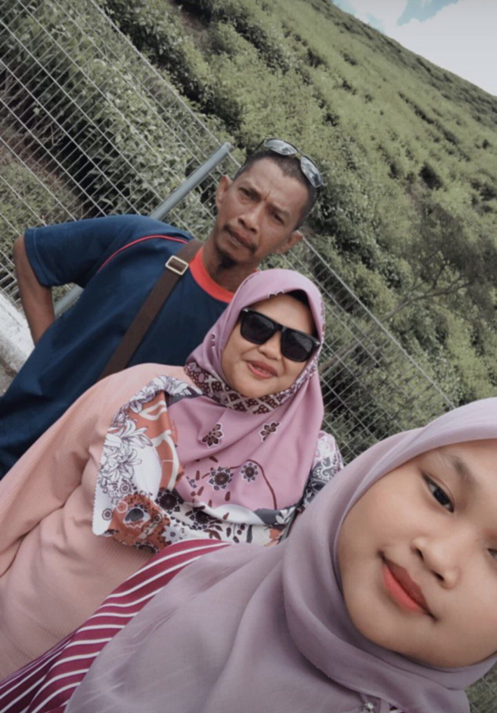
sayang saya
3 / 3
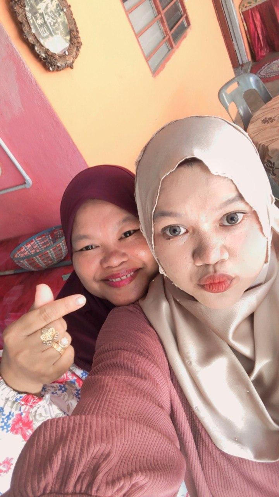
with ibu
3 / 3

with alang
3 / 3

ibu kite
3 / 3
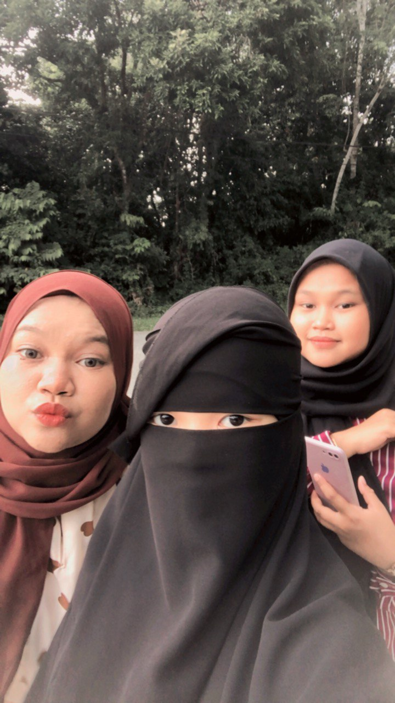
bertiga
|
My father, Zaidi bin Abdul Hamid, is a remarkable individual with a rich life story. At the age of 46,
having been born on March 29, 1977, in the serene town of Baling, Kedah, he has not only witnessed the passage of time but has also played an active role in shaping his own narrative. Growing up amidst the picturesque landscapes of Baling, he developed a deep connection to his roots and a profound appreciation for the values instilled in him by his upbringing. Today, as I reflect on the cherished moments and shared experiences, it becomes evident that my father, affectionately known as Dad, holds a special place in my heart, making him the man I love the most in this world. My beloved mother, Timah binti Mohd Noor, is an extraordinary individual whose life unfolds like a captivating story. At the age of 47, born on the 9th of October, 1976, in the idyllic surroundings of Alor Pongsu, Perak, she carries with her the rich tapestry of her formative years in this charming town. From the quaint streets to the warm embrace of her childhood home, Alor Pongsu has left an indelible mark on the person she has become. As I reflect upon the wealth of experiences that have shaped her character, it becomes apparent that my mother, affectionately referred to as Mom, is not just a beacon of wisdom and love but also a testament to resilience and grace. In the tapestry of my life, she occupies a unique and cherished space, earning the distinction as the woman I love the most in this vast and wondrous world. My dear brother, whose name resonates with strength and character, is none other than Muhammad Amir Quyyum bin Zaidi. At the youthful age of 22, he came into this world on the 22nd of May, 2001, gracing Taiping, Perak, with his presence. As he navigated the tapestry of his early years in the serene landscapes of Taiping, the essence of his identity was intricately woven into the fabric of this charming town. Amir, or Abang as I affectionately call him, emerges not only as a sibling but as a source of inspiration and camaraderie in my life. His journey through the years has been a testament to resilience, growth, and a unique blend of qualities that make him the man I hold in deep regard, second only to my cherished father. My cherished sister, who goes by the endearing name Nurul Irdina binti Zaidi, first saw the light of day on the 4th of January in the year 2006, gracing the picturesque town of Kulim, Kedah, with her presence. As the hands of time have woven their intricate patterns, she has blossomed into a remarkable individual, now standing at the age of 17. It is with a heart overflowing with affection and admiration that I express the depth of my emotions, I love her dearly, cherishing the bond that unites us in the shared journey of life. In the tender chapters of our family story, my youngest sister, known affectionately as Nurul Ilyana binti Zaidi, graces our lives with her youthful presence. At the age of 14, having come into this world on the 2nd of May, 2009, in the picturesque town of Kulim, Kedah, she stands as a testament to the passage of time and the boundless joy that accompanies her growth. The significance of Kulim extends beyond mere geographical coordinates, for it serves as the cradle of her earliest memories, the nurturing ground for her unique spirit, and the backdrop against which her character has unfolded. Nurul Ilyana, or Ilyana as we fondly call her, embodies a captivating blend of innocence, curiosity, and exuberance, infusing our home with laughter and warmth. In the symphony of our shared familial experiences, I find myself deeply connected to her, and with an abundance of love and affection, I declare that I love my sister very much, cherishing each moment as a precious thread woven into the fabric of our collective journey. |